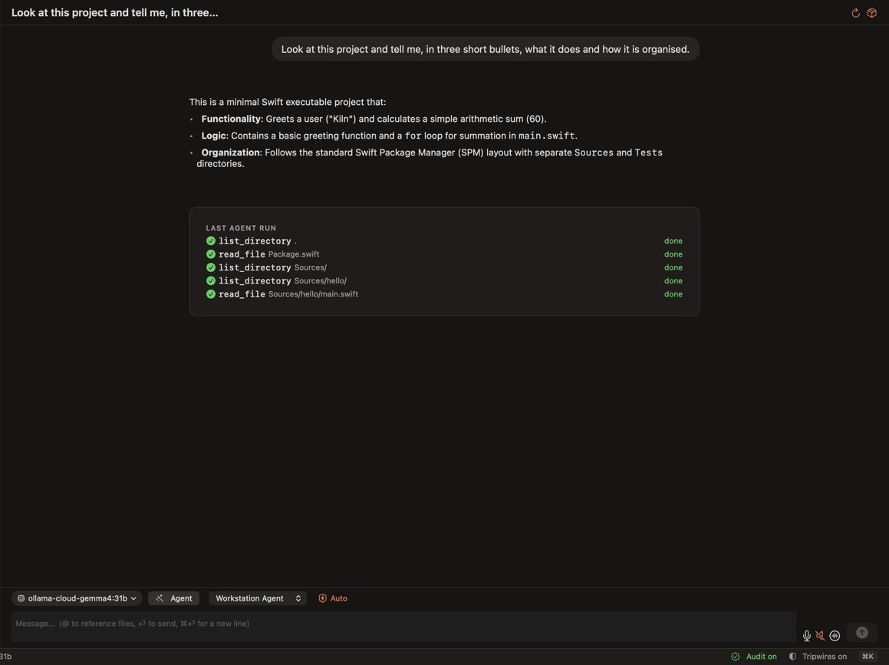
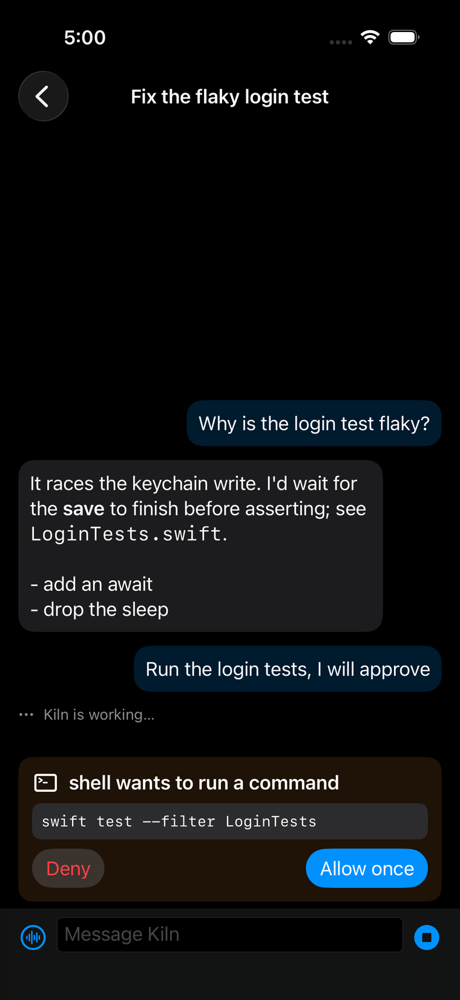
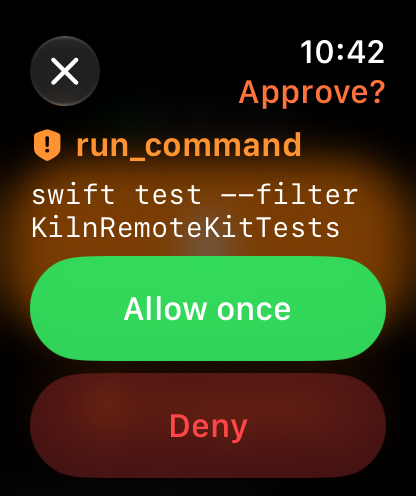
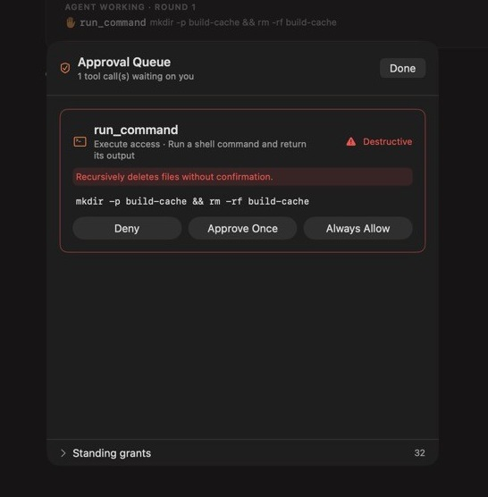
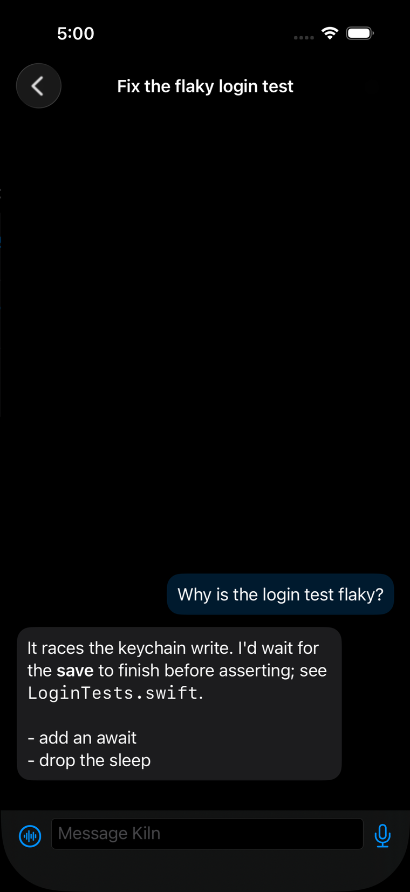
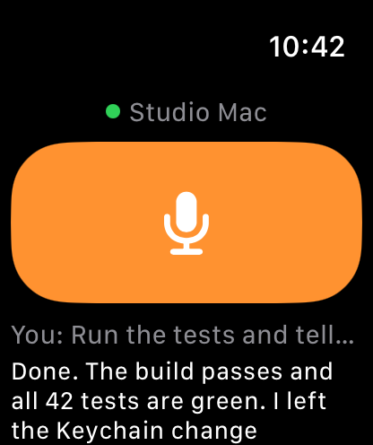

Agents that work. Hands that stay on the controls.
Kiln is a Mac workshop where AI agents do real work (code, reverse engineering, model training) and every consequential step waits for you, at your desk or on your wrist.
Notarized by AppleSource-availableApple silicon recommended
Version 0.1.1 preview for macOS 15 or later. Early software: read what works and what does not before you rely on it.



The Mac app, and the iPhone and Apple Watch approval screens. Companion screens are from the simulator with demo data.
592automated tests pass on the Mac
3approval modes: Ask, Auto, Bypass
5model providers verified in live chat
Source-availablesource, notarized builds, public issues
Wristapprovals verified on a real iPhone and Apple Watch
See it work
A failing test, fixed and committed. Every step approved.
An unedited recording of Kiln 0.1.1 in Ask mode: the agent runs the tests, reads the code, fixes the bug and commits, and each consequential step waits for an answer, here from a phone.
Real Kiln on a Mac, hosted model gemma4:31b, cuts marked in the video. The phone is the iOS Simulator paired to the Mac, not a real iPhone, and there is no Apple Watch in this cut. Muted, captioned.
Why Kiln
Let an agent do the work. Keep the last word.
Most agent tools make you choose between watching every step and trusting everything. Kiln is built around a third option: let the agent run, and make every important decision visible, answerable and recorded.
Supervision is the product
Commands, file writes and network calls stop at an approval that spells out what will happen. Three modes decide who answers; a few things are blocked in every mode.
Consequences in plain language
Ask, Auto and Bypass
A tamper-evident audit chain
Approve from anywhere
Walk away from the desk. When the agent needs you, your iPhone is alerted and the alert mirrors to your Apple Watch. Tap Allow once or Deny, even with the phone locked.
Encrypted end to end
Works off your home network
Answers recorded as remote
One app, three crafts
Write code, take binaries apart and train models in the same place, with the same agent, tools and audit trail. A native app in Swift and SwiftUI, not a browser in a box.
Editor, build, test, LLDB
Ghidra, radare2, Mach-O
MLX LoRA, distillation, Create ML
Safety, shown not claimed
Every risky step asks first.
This is a real approval from Kiln: the agent was asked to clean up a folder, and the command deletes files recursively. Kiln marks it destructive, spells out the consequence and waits.
Hard blocks no mode can liftCommands like a recursive delete from the root are refused outright.
Behavior-monitor holdsA run that trips a wire is paused for review, whatever mode is on.
An audit chain you can verifyEach decision records how it was answered: mouse, keyboard, remote, or a mode.

Mode
Who answers
Good for
Ask
You, for every write, command and network call.
Unfamiliar projects and anything you want to watch closely.
Auto
Kiln approves routine, non-destructive work in your project. Destructive, outside-scope, new-to-the-network and flagged commands still ask.
Everyday work where you want fewer interruptions.
Bypass
Kiln approves everything that is not hard-blocked. Red, confirmed first, and it resets when Kiln quits.
Tasks you have decided to trust, such as reading and replying in an app.


Away from the desk
Start it. Walk away. Answer from your wrist.
Kiln Remote puts the conversation and the approvals on your iPhone and Apple Watch. Talk to the agent by voice, hear the reply, and answer an approval without going back to the Mac.
Voice in, voice outThe watch records the moment you tap and the Mac transcribes it. No dictation sheet to wade through.
Alerts when the app is closedThe Mac asks your relay to send an Apple push alert if an approval waits more than a few seconds.
Private by constructionEvery message is encrypted with a key only your devices hold; the relay forwards ciphertext and stores nothing.
Honest setup cost: you host the small relay yourself (a free Cloudflare Worker works) and create an Apple push key. The companion apps are built from source with your own signing team; they are not on the App Store.
The workshop
Different crafts. One foundation.
The same agent, tools, approvals and audit trail follow you across the work. Each area is honest about how far it has come.
WorkingNot Xcode
Build
A source editor with a Swift and C language server, build, test and run, an LLDB launch debugger, code folding, multi-cursor, Git markers and a real terminal.
Agent reads, edits, runs tests, commits
MCP servers and Kiln's own tools
Swarms with roles and dependencies
Native inspectionGhidra needs setup
Take apart
Import a binary, read strings and disassembly, and let the agent rename and annotate with Ghidra and radare2 engines behind it. Every tool call is listed and audited.
Mach-O inspection, native
Agent edit tools with a change log
Pointer scan and cross-references
Real training verifiedGUI QA ongoing
Make models
Import datasets, train with Create ML or MLX, fine-tune a LoRA, or distil one model into another, from the app or by asking the agent. Models must already be on disk unless you say a download is fine.
LoRA and distillation as agent tools
Evaluation and export
Runs on your Mac's GPU
Bring any model
Local with MLX, Ollama or Apple Foundation Models, or hosted with your own key. Keys live in your Keychain and go only to the provider they belong to.
Talk to it
Dictate, hear replies read aloud, or hold a hands-free conversation. Speech recognition runs on the Mac when it can.
Experimental
Use other Mac apps
Opt-in computer use reads and operates other apps through Accessibility, one approved step at a time. It has read Calendar and Messages and sent a reply.
Working
Browse
A tabbed WebKit browser the agent can read and drive. Sign-in, autofill and passkeys are not verified.
Working
Run devices
Boot iOS simulators and Android emulators, watch the screen, install and launch apps, read logs.
Kiln is early. It has real, tested capabilities and substantial unfinished areas, and the project says so out loud. Every claim on this page maps to a record in the repository.
It is powerful, so Kiln puts the safeguards where you can see them: approvals that spell out the consequence, three explicit modes, hard blocks no mode lifts, monitor holds, and an audit chain. It reduces risk; it does not remove it. Start in Ask mode on a project you can restore.
Why isn't Kiln sandboxed?
To replace a terminal coding agent it has to run real git, package managers and shells in any folder you choose, which a sandboxed app cannot do. Hardened runtime and notarization still apply, and the approval layer is the safety boundary. The trade-off is explained in the current-state document.
Where does my code go?
To the model provider you pick. With a local model nothing leaves your Mac. The relay only forwards encrypted messages and keeps nothing. A push alert carries the tool name and, unless you switch it off, the first 80 characters of the command, and that passes through Apple's servers.
Do I need an API key?
Not for local models. Hosted providers need your own key, stored in the macOS Keychain.
How is this different from Claude Code, Codex or OpenCode?
Those are excellent terminal and editor agents. Kiln is a native Mac app focused on supervising an agent: explicit approval modes, a verifiable audit trail, answering approvals from your iPhone or Apple Watch, and putting coding, reverse engineering and model training in one place. It works with many model providers. It is also much younger, so expect less polish.
Can I get the iPhone and Apple Watch apps?
Their source is in the repository (Companion/). Build them with your own Apple developer signing; they are not on the App Store or TestFlight yet.
Is it affiliated with Apple, Anthropic, OpenAI or Ghidra?
No. Kiln is an independent project and uses those names only to describe compatibility.
Build the workshop with us.
Bring your Swift, your sharpest bug report, your reverse-engineering habits or your eye for design. Every issue is public and every claim is checked.